Solucions flexibles i fiables dissenyades per impulsar el creixement del teu negoci.
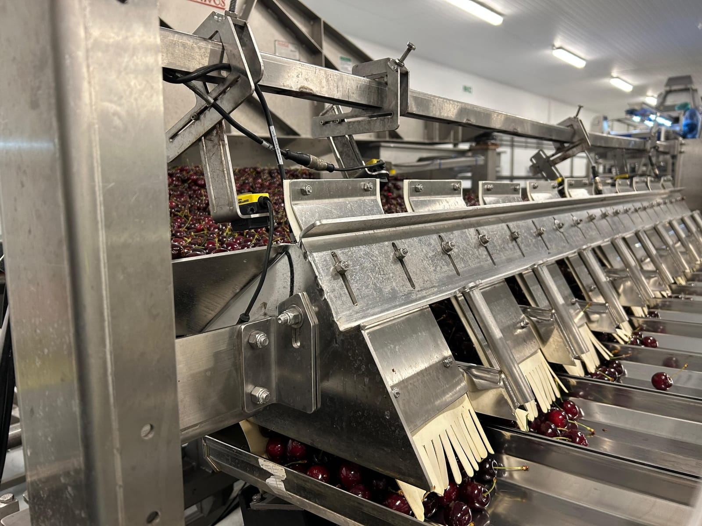
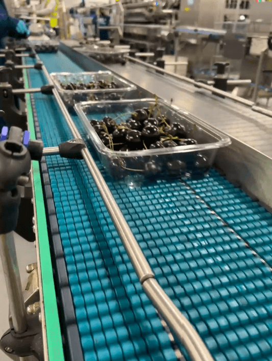
Comença a prendre el control de la teva planta de producció.
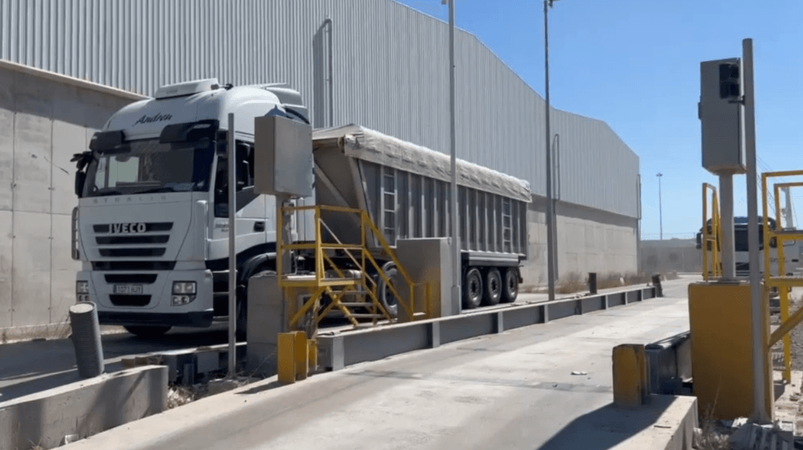
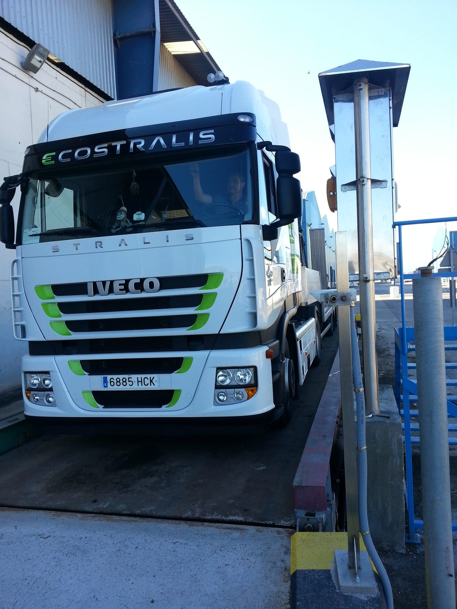
Digitalitza el futur de la logística i el transport.
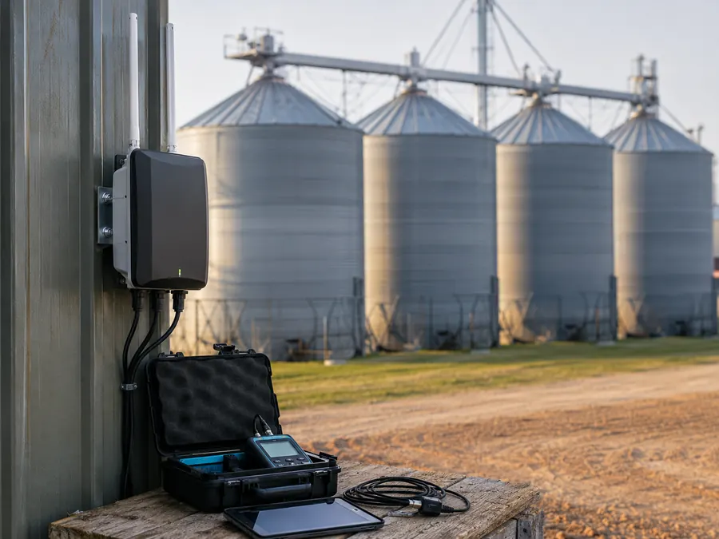
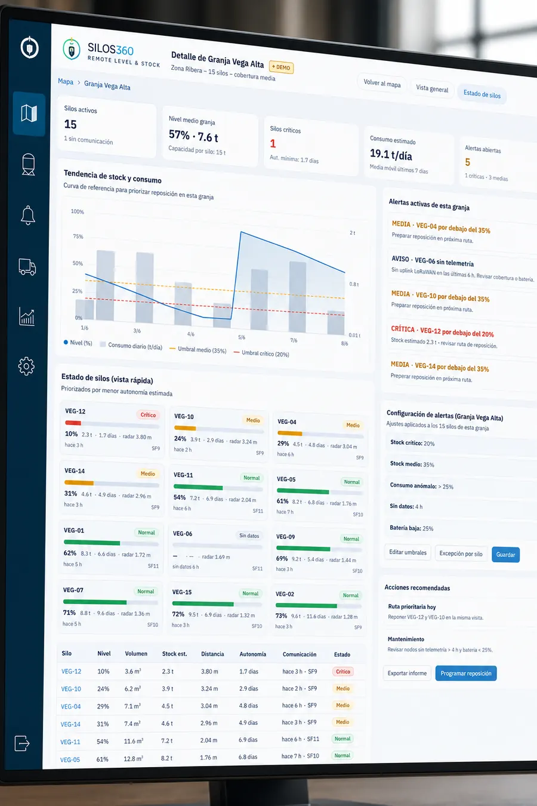
Visibilitat remota del nivell, volum i estoc dels teus sitges i dipòsits, amb alertes, històrics i integracions. Adéu a les revisions manuals i a les urgències de reposició.
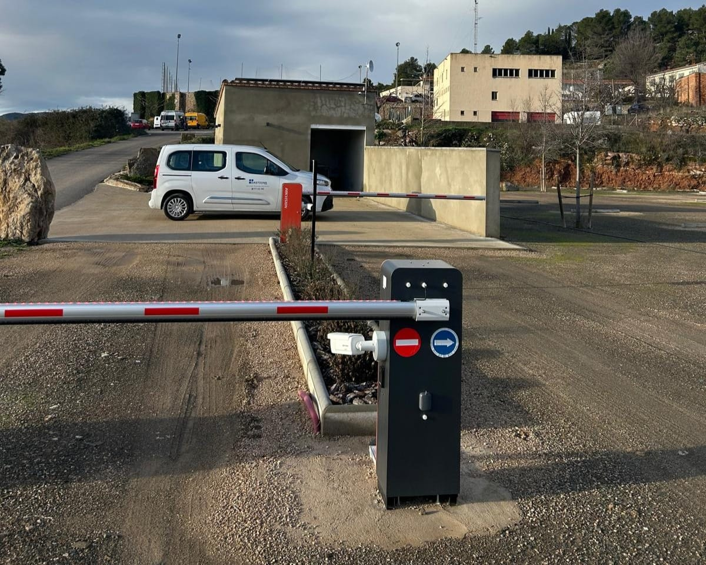
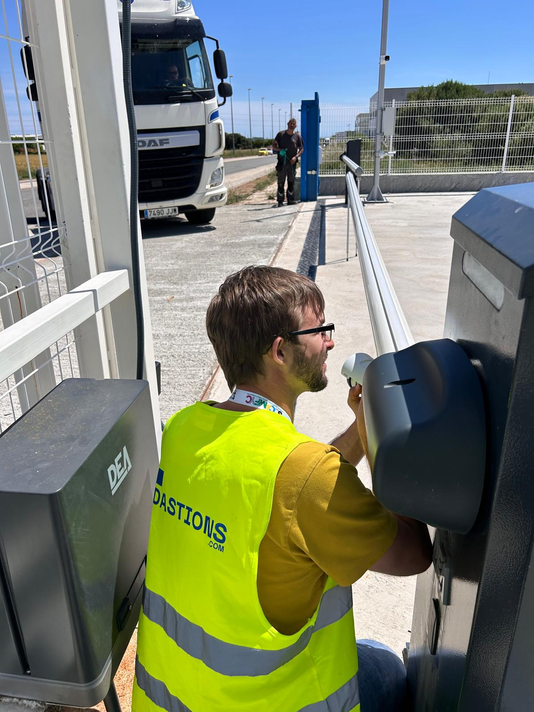
Automatitza l'entrada i sortida de vehicles i persones: lectura de matrícules, codi QR i targetes RFID, amb barreres i càmeres connectades i registre de cada accés en temps real.
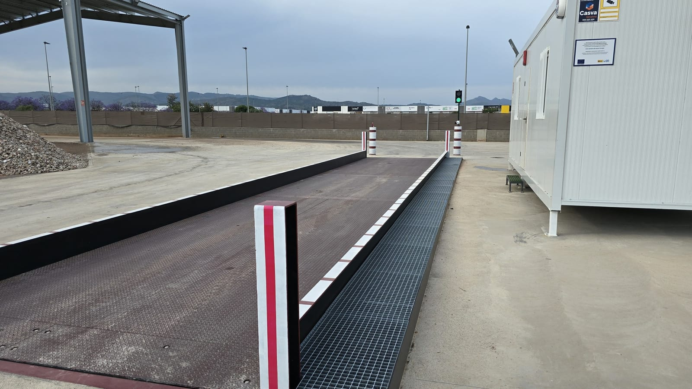
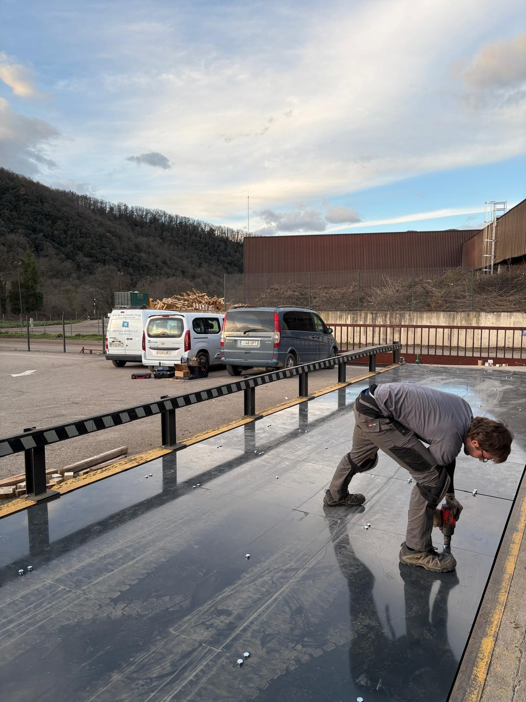
Bàscules pont per al pesatge de vehicles pesants, dissenyades, fabricades i instal·lades a mida. Projecte clau en mà: obra civil, muntatge, posada en marxa i verificació metrològica.
Programari de coordinació d'activitats empresarials: centralitza la documentació CAE dels teus proveïdors i contractistes, la valida amb traçabilitat completa i la connecta amb el control d'accessos de la consergeria. Adeu als correus i als fulls de càlcul.
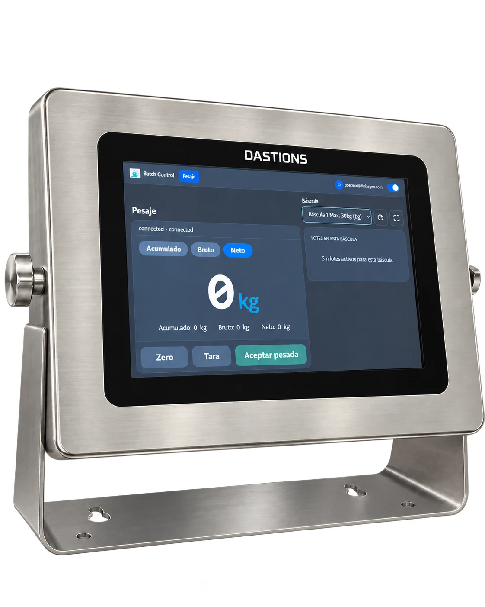
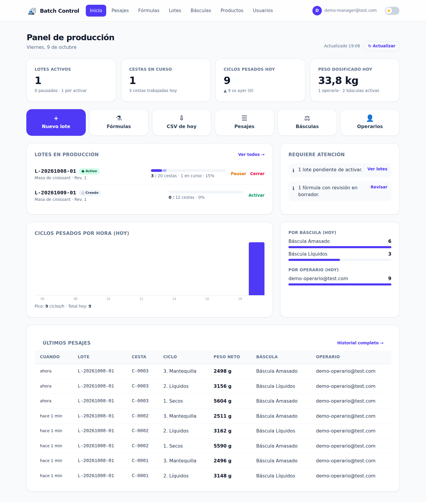
Dosifica les teves fórmules pesada a pesada, sense errors. Les bàscules es connecten a una aplicació web que guia l'operari en cada pesada i ho registra tot amb traçabilitat completa per lot.
Protegim els teus sistemes industrials i la teva xarxa amb un enfocament tècnic: autenticació, firewall, detecció d'intrusions i monitoratge continu.
Agents intel·ligents que automatitzen el pesatge i la logística, amb lectura de matrícules, presa de decisions i guia per veu en temps real.
Explica'ns el teu cas i et proposem la plataforma que millor encaixa amb la teva operativa.
Sol·licitar pressupost →